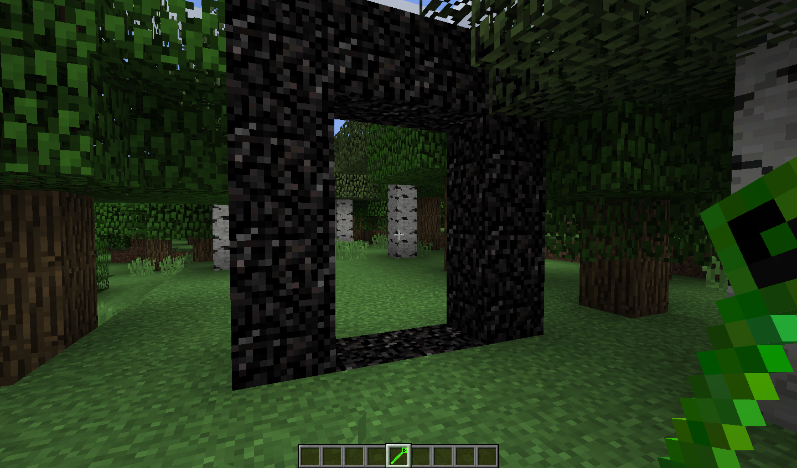

Портал в мир подземелий построен из соответствующего блока. Он, в свою очередь, изготовлен из тройного сжатого обсидиана, он также изготовлен из двойного сжатого обсидиана, который изготовлен из сжатого обсидиана, который изготовлен из обычного обсидиана. Вы можете просмотреть все рецепты изготовления в Jei
Постройте рамку, подобную порталу в Незер, и активируйте ее с помощью Заклинания Подземелья.
Рекомендуется входить в портал как минимум в алмазных доспехах и с хорошим мечом. Дело в том, что монстры встречаются там на каждом шагу не только ночью, но и днем. Если вы найдете подземелье , вы можете спокойно отправиться туда и забрать ресурсы, которые находятся в сундуках. Будьте осторожны: в подземельях могут быть тайники
Постройте рамку, подобную порталу в Незер, и активируйте ее с помощью Заклинания Подземелья.
Рекомендуется входить в портал как минимум в алмазных доспехах и с хорошим мечом. Дело в том, что монстры встречаются там на каждом шагу не только ночью, но и днем. Если вы найдете подземелье , вы можете спокойно отправиться туда и забрать ресурсы, которые находятся в сундуках. Будьте осторожны: в подземельях могут быть тайники
